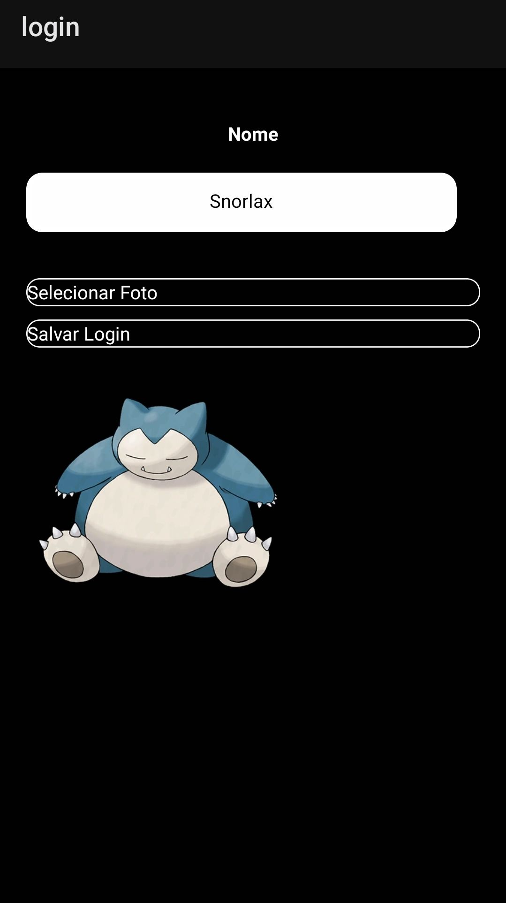
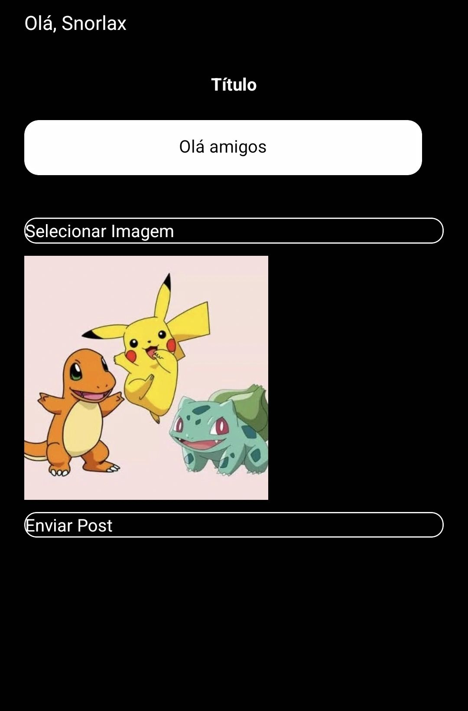
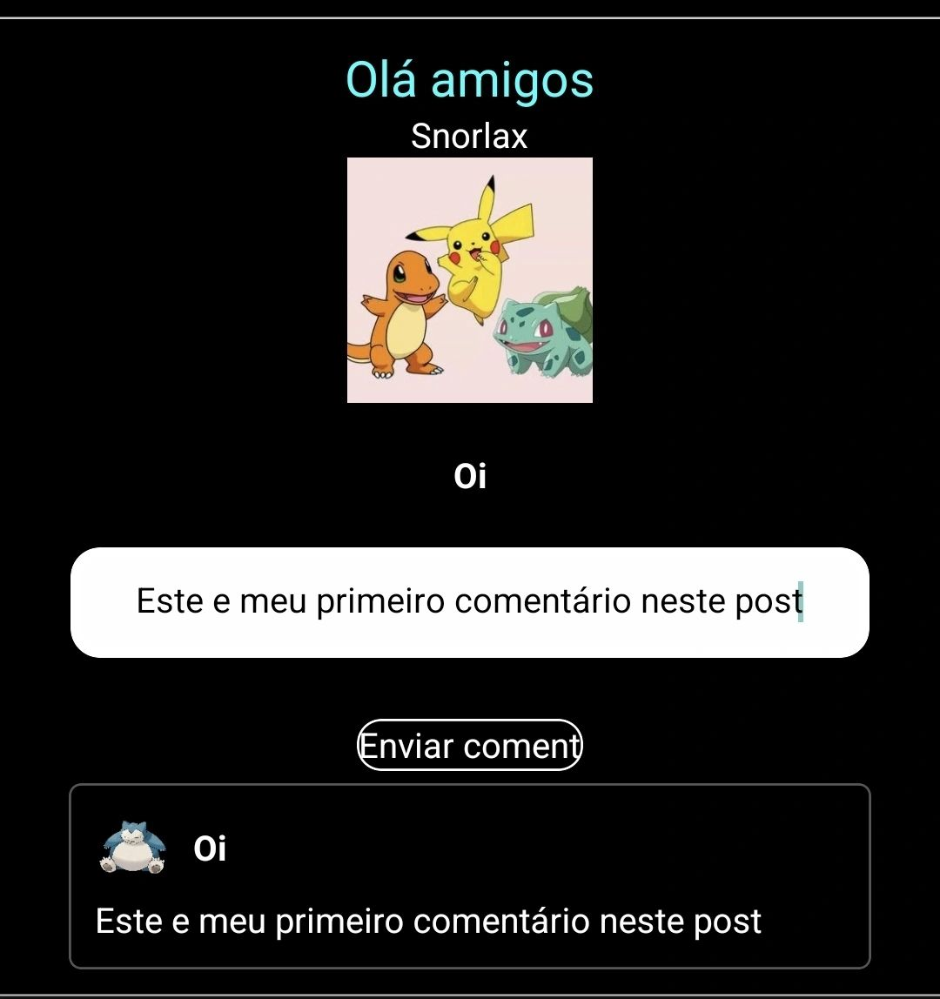
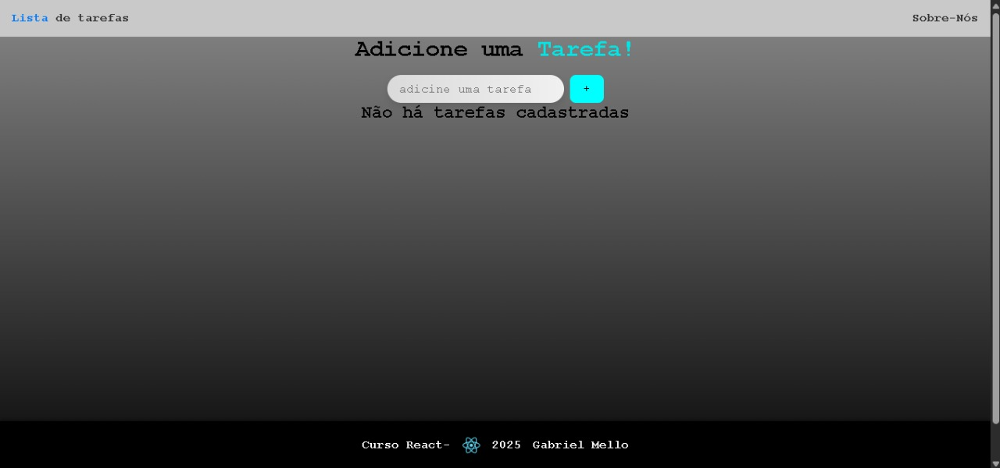

🎓 Atualmente sou estudante do curso técnico em Desenvolvimento de Sistemas na Etec Jacinto Ferreira
de Sá. Tenho direcionado meu foco para a área de desenvolvimento mobile e web,
que despertou meu interesse desde o primeiro contato com a disciplina e vem se fortalecendo a cada dia
.
💡 Estou em constante aprendizado para aprimorar minhas habilidades como desenvolvedor mobile e web,
explorando tanto o desenvolvimento multiplataforma com React e React Native ⚛️
☕ Caf-Teria – Sistema Mobile de Gestão de Cafeteria
Descrição Geral: sistema Mobile completo focado na experiência do usuário e eficiência operacional.
Tecnologias utilizadas: React Native, React Native Paper, JavaScript, TypeScript, Figma
🐾 PokeRede – Rede Social de Compartilhamento Pokémon
Rede social para fãs de Pokémon com criação de perfis, postagens, comentários e seguidores.
Tecnologias utilizadas: React Native, JSON, JSONserver, TypeScript, JavaScript



☀️🌙 Aplicativo de Clima em tempo real
Mostra automaticamente a previsão da sua cidade, exibindo dados como temperatura, umidade e condição do clima.
Tecnologias utilizadas: React Native, APIs de Clima, Three.js (modelo 3D), JavaScript, TypeScript
Aplicativo web simples e responsivo para gerenciar tarefas, desenvolvido em React + Vite durante o curso de desenvolvimento que estou realizando.
Tecnologias Utilizadas:
✨ Funcionalidades:

Você pode me encontrar em: